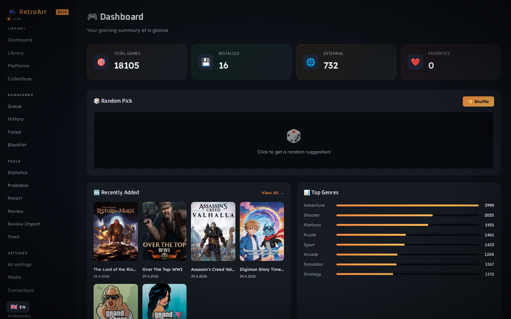
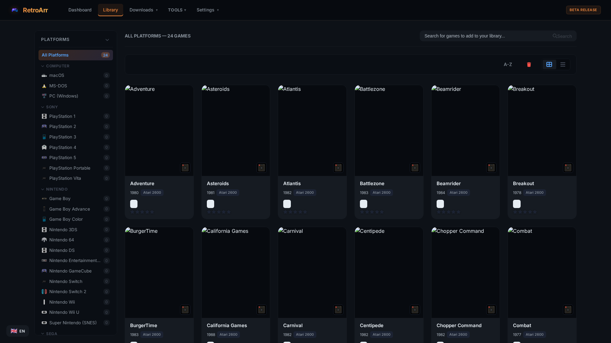
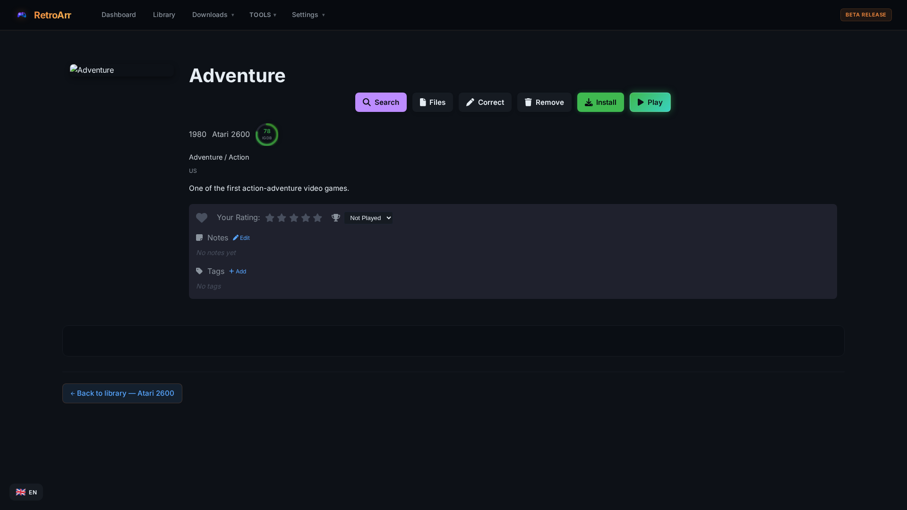
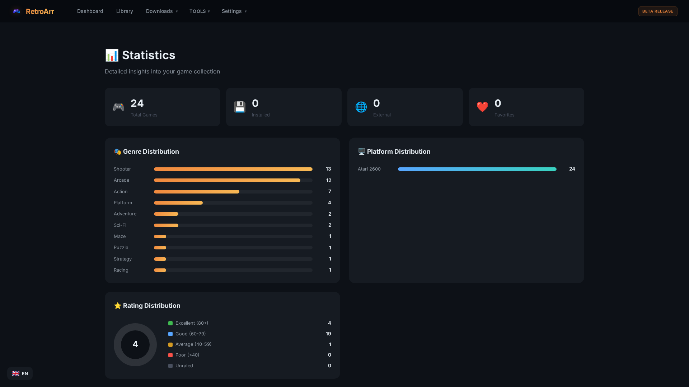
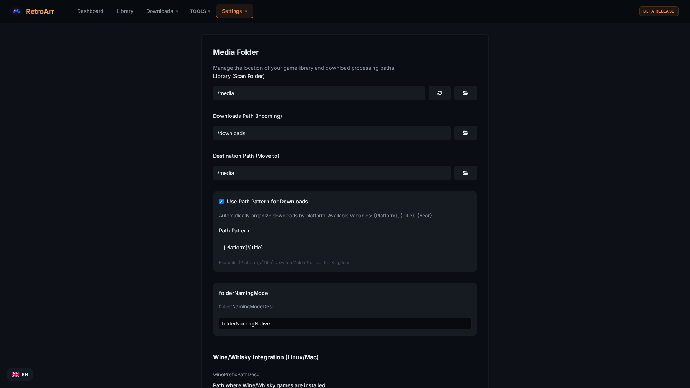
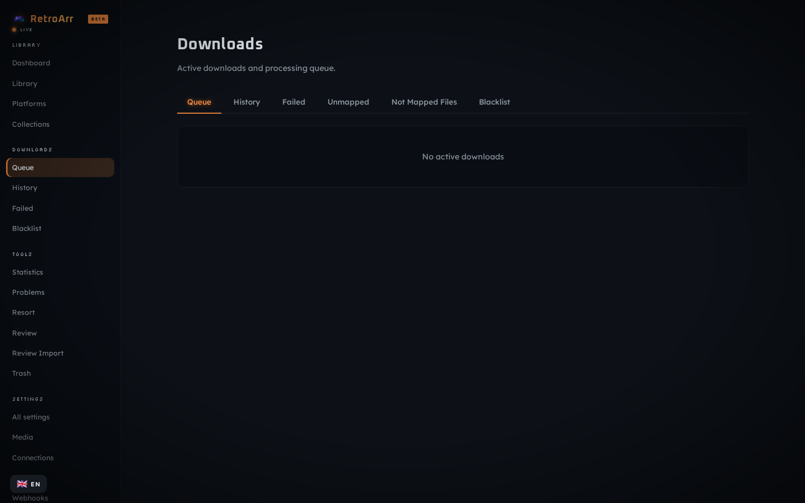

RetroArr is a self-hosted game library manager that automatically enriches your collection with metadata, cover art, and more, for retro classics and modern titles alike.

A complete toolkit for managing your game library
From Atari 2600 to PlayStation 5, Nintendo Switch, PC, and everything in between. Full retro and modern platform support.
Automatically fetch cover art, descriptions, ratings, and more from IGDB and ScreenScraper.fr with intelligent matching.
Genre distribution, platform breakdown, rating analysis, and detailed insights into your collection at a glance.
Automatically organize and rename your game files with customizable naming patterns and folder structures.
Deploy in seconds with Docker. Multi-architecture support for x86_64 and ARM64. One command to get started.
UI translated into English, German, French, Spanish, Russian, Chinese, and Japanese.
Connect with Prowlarr, Steam, GOG, IGDB, and ScreenScraper. Automated download management and import.
Organize games with custom tags, smart collections, favorites, and personal ratings and reviews.
Built-in retro emulator powered by EmulatorJS. Play supported platforms directly from the web UI with save state support.
A modern, responsive web interface built for game collectors





Choose your preferred installation method
services:
retroarr:
image: ghcr.io/riddix/retroarr:latest
container_name: retroarr
ports:
- "2727:2727" # HTTP
- "2728:2728" # HTTPS (self-signed, optional)
volumes:
- ./config:/app/config
- /path/to/games:/media
- /path/to/downloads:/downloads
- ./savestates:/app/savestates
environment:
- PUID=1000
- PGID=1000
- RETROARR_HTTPS_PORT=2728 # remove to disable HTTPS
restart: unless-stoppedSave as docker-compose.yml and run docker compose up -d
docker run -d \
--name retroarr \
-p 2727:2727 \
-p 2728:2728 \
-e RETROARR_HTTPS_PORT=2728 \
-v ./config:/app/config \
-v /path/to/games:/media \
-v /path/to/downloads:/downloads \
-v ./savestates:/app/savestates \
ghcr.io/riddix/retroarr:latestAccess the web UI at http://localhost:2727 or https://localhost:2728
Download the latest release for your platform:
Extract and run the executable. Configuration is stored in ./config/
On first start RetroArr generates an API key in config/apikey.json. Loopback requests (the Docker healthcheck, the bundled web UI) work without it. LAN and remote clients need to send it as a header:
curl -H "X-Api-Key: <your-key>" \
http://your-host:2727/api/v3/gamesView or rotate the key in Settings → API access. EmulatorJS assets and the player iframe are exempt from the key, since browsers can't attach headers to <script> tags.